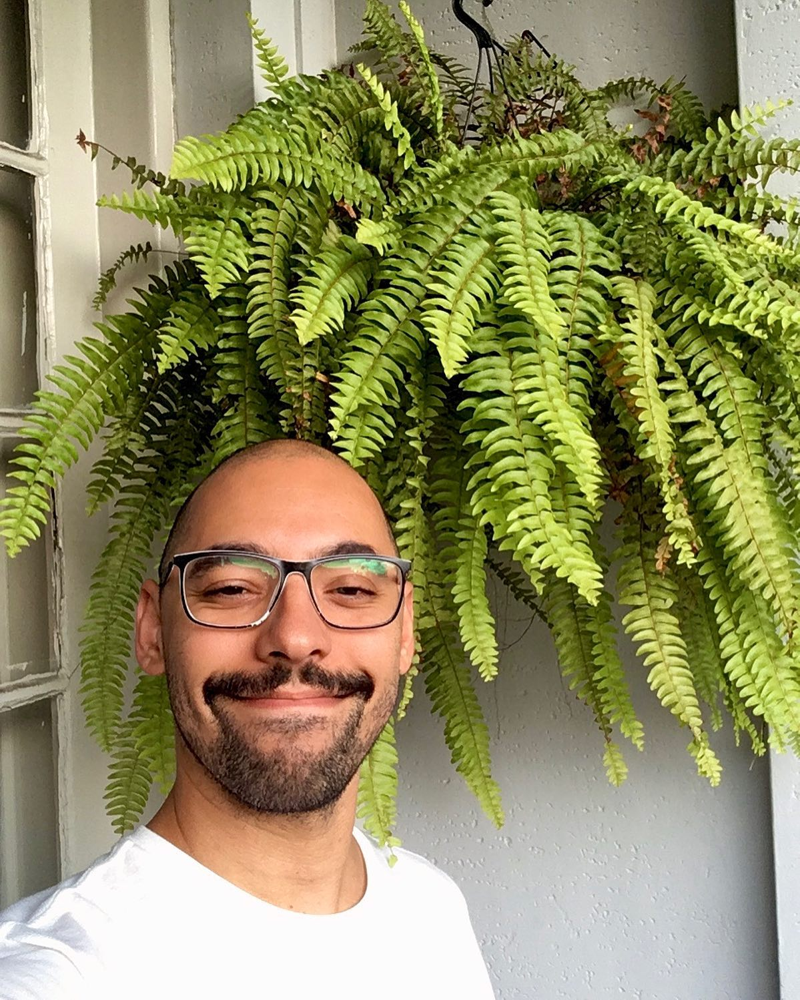

CV Leo Barcelos

Me chama no Whatsapp
E-mail: leo.sou.bar@gmail.com
Resumo / Summary
Sou uma pessoa criativa e curiosa, que gosta de compartilhar. Como eu sempre digo: "Planejar é a arte de prever o previsível"
I am a creative and curious person who enjoys sharing. As I always say, 'Planning is the art of foreseeing the foreseeable.'
Formação / Education
- Web Development Bootcamp Udemy 2023
- Proficiência Avançada em Inglês atestada no Workana 2022
- Técnico em contabilidade SENAC 2023-presente
- Faculdade de Gastronomia HOTEC 2018-2019
- Faculdade de Educação USP 2011-2017
- Faculdade de Pedagogia UFRJ 2008-2011
- Web Development Bootcamp Udemy 2023
- Advanced proficiency in English certified by Workana 2022
- Accounting Technician at SENAC 2023-present
- Culinary Arts at HOTEC College 2018-2019
- Education at USP University 2011-2017
- Pedagogy at UFRJ University 2008-2011
Experiência de trabalho / Working exp
Português:
- Anfitrão Airbnb: Muito mais que um trabalho

Em 2015 comecei um projeto com familiares e amigos, que pretendia transformar um antiga casa da família em uma espécie de hostel. Para isso utilizamos a plataforma do Airbnb como ponto de partida e construímos um espaço lindo e sustentável no Rio de Janeiro.
- Planejamento e criação de anúncios
- Atendimento e vendas de hospedagem
- Organização financeira
- Professor e Chef: Um mix de experiências

Meu primeiro trabalho foi em uma cozinha. Eventualmente eu decidi começar a estudar em uma universidade e, para isso, escolhi a educação. Essas duas experiências sempre caminharam juntas e reverberaram uma na outra. Ora dando aula na cozinha, ora cozinhando em sala de aula.
- Colégio Equipe 2011/12
- Escola Lumiar 2016/17
- Magdalena Bistrô 2013/15
- Diversos cursos de cozinha presenciais ministrados entre 2017/19
- Serviço militar: O Início e a organização
Aos 18 anos eu fiz um concurso para trabalhar em uma cozinha, na base militar do Galeão, no Rio de Janeiro. Foi um começo de vida profissional bastante desafiador. Como seria de se esperar, sobreviver em ambientes hostis costuma nos tornar mais fortes e resilientes. Foi necessário muita criatividade e força de vontade, além de organizaçao, planejamento e consistência entre 2004 e 2011, acordando quase todos os dias às 5h da manhã.
- Disciplina
- Planejamento estratégico
- Comunicação formal
- Resiliência e perseverança
English:
- Airbnb Host: Much more than a job
In 2015, I started a project with family and friends, aiming to transform an old family house into a kind of hostel. For that, we used the Airbnb platform as a starting point and built a beautiful and sustainable space in Rio de Janeiro.
- Planning and creating listings
- Hospitality and sales
- Financial organization
- Teacher and Chef: A blend of experiences
My first job was in a kitchen. Eventually, I decided to pursue higher education, and I chose the field of education. These two experiences have always intertwined and influenced each other. Sometimes teaching in the kitchen, other times cooking in the classroom.
- Equipe School São Paulo 2011/12
- Lumiar School São Paulo 2016/17
- Magdalena Bistro 2013/15
- Various in-person cooking courses taught between 2017/19
- Military Service: The Beginning and Organization
At the age of 18, I took an exam to work in a kitchen at the Galeão military base in Rio de Janeiro. It was a challenging start to my professional life. As expected, surviving in hostile environments tends to make us stronger and more resilient. It required a lot of creativity and determination, as well as organization, planning, and consistency between 2004 and 2011, waking up at 5 a.m. almost every day.
- Discipline
- Strategic planning
- Formal communication
- Resilience and perseverance
© Leo Barcelos. All rights reserved.